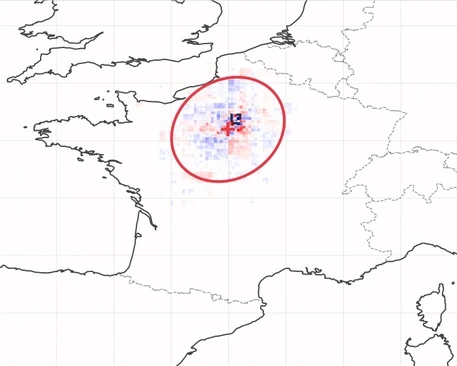
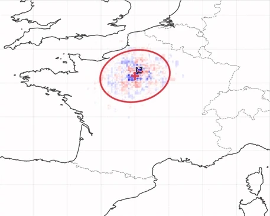
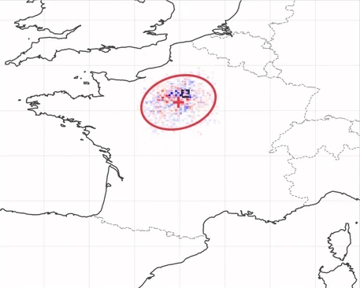
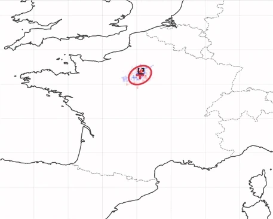

Preprint · Under review · arXiv:2604.22580
Explanation of Dynamic Physical Field Predictions using WassersteinGrad
Application to autoregressive weather forecasting.
- 1Univ. Toulouse, INSA Toulouse, CNRS UMR 5219, IMT, Toulouse, France
- 2Météo-France, CNRS, Univ. Toulouse, CNRM, Toulouse, France
- 3Cerfacs, CNRS/Cerfacs/IRD, CECI, Toulouse, France


Most attribution methods were developed for static inputs. Weather is different: the structures we want to explain move.
Gradient explanations of a weather model are unstable under small input perturbations. In these fields, the instability often appears as a spatial shift of the map, not only as amplitude noise. WassersteinGrad aggregates the perturbed maps geometrically, with a Wasserstein barycenter, rather than pixel by pixel.
01 — The problem
Small perturbations move the explanation.
Neural weather models are now competitive with physics-based forecasts. To trust one, a forecaster needs to know what a given prediction depends on. We answer this with gradients: one forecast quantity, differentiated with respect to one input field.

Add a little noise and the map shifts
Perturbing the wind field changes the forecast error by about 1%. The gradient map keeps a similar pattern, but it moves. Treating both maps as distributions of mass, optimal transport shows where the mass went.

Clean gradient
Gradient on the original input.

Perturbed gradient
Same event, one noisy input.

Transport flux
Mass leaves some places and arrives nearby.
Figure 1cThe flux forms a structured dipole at a scale of about 200 km (dashed scale bar). Pure amplitude noise would give a flux with no spatial structure.
02 — Why averaging fails
Pointwise averaging blurs shifted maps.
A single gradient is noisy, so SmoothGrad averages the gradients of many perturbed inputs, pixel by pixel. Whether that helps depends on how the maps differ.
Noise changes amplitude
Each map is the same attribution plus independent noise. Averaging cancels the noise.
Noise also changes position
The maps are shifted copies of each other. Averaging them mixes misaligned structures and spreads the mass over a wider area than any single map.


 Pointwise mean
Pointwise mean
A blurred annulus that matches none of the inputs.
 Wasserstein barycenter
Wasserstein barycenter
One sharp ring at the average position and shape.
Both outputs aggregate the same eight rings. Only the space in which the average is taken changes: pixel values, or positions of mass.
03 — WassersteinGrad
Aggregate by transport instead.
WassersteinGrad keeps SmoothGrad's sampling and changes only the aggregation. Each perturbed gradient becomes a probability measure, and the measures are combined with a Wasserstein barycenter.
-
01 · Perturb
x̃i = x + εi
Add Gaussian noise to one input channel, N = 20 times.
-
02 · Differentiate
Gi = ∇x̃i 𝒴i
Backpropagate the target through the full autoregressive rollout.
-
03 · Normalize
μi = |Gi| / Σ|Gi|
Each map becomes a probability measure over the grid.
-
04 · Barycenter
μ* = arg minμ Σi W22(μ, μi)
Entropic barycenter, computed with convolutional Sinkhorn. Stable, but unsigned.
→ WGBary -
05 · Optional
μ* × G
Use the barycenter as a mask on the clean gradient G to recover sign.
→ WGBary×Grad
About 2× the run time of SmoothGrad: 14.6 s vs 7.4 s per sample on a single 16 GB laptop GPU, with Sinkhorn regularization λ = 0.001. At λ = 0.01 the overhead drops to 1.13×.
04 — Evidence
Does displacement really matter?
The shift is large compared with the change in the forecast, and it grows with lead time. It also follows from how common forecasting architectures route gradients.
Mean centroid shift of the attribution map for σ < 0.4, while the forecast error changes by less than 1%.
Peak displacement at t + 5, 3–4× larger than at t + 1. Each rollout step adds its own distortion.
Change in relative forecast error over the whole noise sweep at t + 5. The forecast barely changes while its explanation moves.

Forecast verification has the same issue: rain forecast slightly in the wrong place scores poorly under pointwise measures, which led to displacement-based scores.
Hoffman et al. 1995 · Keil & Craig 2007 · Ebert 2008
Why do the maps move? Two mechanisms
Two components found in most forecasting backbones turn additive input noise into a spatial deformation of the gradient. UNetRPP, the model used here, combines convolutions and attention.
Pooling relocates the gradient
Max pooling passes the gradient only to the largest value in each window. If noise changes which value is largest, the gradient lands on a different pixel.
Noise also switches on ReLUs that should be off: their expected output, z Φ(z/s) + s φ(z/s), is positive even for z < 0. This opens gradient paths through unrelated regions.
Attention routing can switch
The attention matrix multiplies the gradient in the backward pass, so the map follows the attention pattern.
Self-attention is not Lipschitz. Different noise draws can lead to different token clusterings, not small variations of one.
05 — Results
More stable maps, with equal or better faithfulness.
LLEcos measures how much the spatial pattern of a map changes under a small input perturbation. It is the metric closest to the displacement problem.
Lower LLEcos than SmoothGrad at t + 1. WGBary is also lowest on LLEℓ2.
Highest faithfulness (ROAD) at t + 1, and again at t + 5 with 0.762.
Best sparsity (Gini) at t + 5, for WGBary×Grad.

 SmoothGrad
WGBary
SmoothGrad
WGBary
Lead time t + 5. Drag, or use the arrow keys when focused.
The same forecast at t + 5
SmoothGrad stays fragmented, with no stable spatial organization. WGBary gives one region of influence. It is broader than at t + 1, as expected when uncertainty grows with lead time.
Full results Table 1 · all metrics, both lead times
| One-step (t + 1) | Autoregressive (t + 5) | |||||||
|---|---|---|---|---|---|---|---|---|
| Method | Spar. ↑ | Faith. ↑ | LLEℓ2 ↓ | LLEcos ↓ | Spar. ↑ | Faith. ↑ | LLEℓ2 ↓ | LLEcos ↓ |
| BaseGrad | 0.547±.001 | 0.772±.010 | 0.068±.001 | 3.5±0.07 | 0.531±.002 | 0.714±.019 | 0.128±.006 | 4.2±0.10 |
| IntegratedGrad | 0.628±.004 | 0.810±.011 | 0.080±.001 | 2.9±0.10 | 0.632±.004 | 0.739±.018 | 0.087±.006 | 6.3±0.10 |
| SmoothGrad | 0.539±.002 | 0.809±.012 | 0.046±.001 | 2.1±0.05 | 0.526±.001 | 0.757±.017 | 0.083±.004 | 2.6±0.06 |
| VarGrad | 0.871±.004 | 0.809±.012 | 0.024±.001 | 2.3±0.06 | 0.710±.006 | 0.740±.013 | 0.058±.004 | 3.0±0.10 |
| WGBary | 0.340±.002 | 0.815±.011 | 0.023±.001 | 0.1±0.01 | 0.330±.002 | 0.762±.016 | 0.047±.002 | 0.2±0.01 |
| WGBary×Grad | 0.849±.003 | 0.800±.010 | 0.045±.001 | 3.6±0.08 | 0.750±.004 | 0.760±.017 | 0.075±.004 | 4.3±0.10 |
Bold = best Underline = second best Mean ± SEM over n = 100 events LLEcos reported ×10³ Sparsity: Gini · Faithfulness: ROAD · Robustness: LLE
Setup and metrics Data, model, sampling, evaluation
- Dataset
- TITAN, derived from Météo-France's operational AROME limited-area model.
- Resolution
- 0.025° ≈ 2.5 km, regular lat–lon grid, 1-hour analyses.
- Domain
- France subdomain, 512 × 640 grid points, 21 channels (5 surface + 16 upper-air across 250/500/700/850 hPa).
- Model
- UNetRPP, a hybrid convolutional–attention U-Net trained with Py4cast, with weights validated by meteorologists. Weights are fixed throughout.
- Splits
- Train 2020–2022 (1 h step); test 2023 (3 h step).
- Explained pair
- Total surface precipitation (
aro_tp_0m) over a Paris box, with respect to zonal wind at 250 hPa (aro_u_250hpa). - Sampling
- N = 20 perturbed samples, σ = 0.2 × (max xt − min xt), Sinkhorn λ = 0.001, seed 42.
- Evaluation
- n = 100 high-intensity precipitation events from the 2023 test split, at t + 1 and t + 5.


ROAD
Mask the top-p% pixels by linear imputation and check that the prediction degrades more than under random masks of the same size. Reported as an AUC.
Local Lipschitz estimate
LLEℓ2 measures amplitude sensitivity to a bounded input perturbation. LLEcos normalizes the maps first, so it measures change in spatial pattern.
Gini index
Spatial concentration of the map. A map spread over the whole domain is hard for a forecaster to read.
06 — Physical coherence
Regions of influence with a vertical structure.
The resulting regions of influence recover recognizable spatial and vertical organization in the atmosphere. Here the same rain forecast is explained with respect to zonal wind at four heights, and each map is summarized by its 95% ellipse.




Going down from 250 hPa to 10 m, the region contracts toward the target and becomes somewhat more anisotropic.
This fits broad steering by the upper-level flow and more local influence near the surface.
07 — Paper, code & citation
Citation
@article{essafouri2026wassersteingrad,
title = {Explanation of Dynamic Physical Field Predictions using
WassersteinGrad: Application to Autoregressive Weather Forecasting},
author = {Essafouri, Younes and Raynaud, Laure and
Drozda, Luciano and Risser, Laurent},
journal = {arXiv preprint arXiv:2604.22580},
year = {2026}
}This work has benefited from the AI Interdisciplinary Institute ANITI. ANITI is funded by the France 2030 program under the Grant agreement n°ANR-23-IACL-0002.